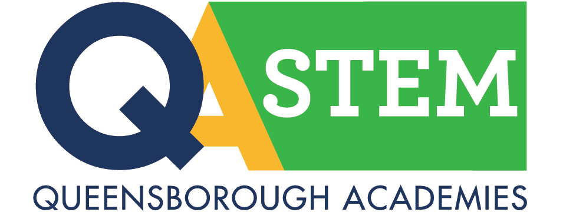

Associate in Science (A.S)
Biotechnology
This program will equip students with the knowledge and skills required to succeed as technicians in the modern biotechnology environment and provide QCC graduates with seamless transfer to the BS program at York College.

Chemistry
Chemistry matters. It’s the study of matter—how it interacts, transforms and changes. If you’re looking to learn about the very substance of the world, find a great job and help improve society, explore chemistry at Queensborough!
Computer Science and Information Security
Graduates of the Associate in Science degree program in Computer Science and Information Security are prepared for transfer to John Jay College of Criminal Justice to complete a Bachelor of Science (B.S.) degree in Computer Science and Information Security.

Engineering Science
Everywhere you look, you see engineering at work – bridges, buildings, space ships, cell phones, and more.
Environmental Science
Graduates of the Associate in Science degree program in Environmental Science are prepared for transfer to a four-year college to complete a Bachelor of Science (B.S.) degree that is essential for most types of employment in this field.
Forensic Science
Recent advances in chemistry, biology and computer science have created new opportunities in fields such as forensic science and criminalistics.
Mathematics and Sciences
The AS degree prepares you to transfer with advanced standing to baccalaureate in science programs (BS), leading to careers in science, mathematics, education, computer science, and the health sciences.
Psychology
This program is essential for most types of employment in this field. Graduates can pursue a wide range of career options including psychology, human services, and social services.
Associate in Applied Science (A.A.S.)
Music Production
This innovative program, the only one of its kind in CUNY, integrates computer, electronic, musical, midi, and "hands-on" recording studio training with classes conducted in technology labs and multi-track recording studios. All students complete a required cooperative internship in a professional recording studio.